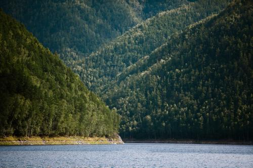
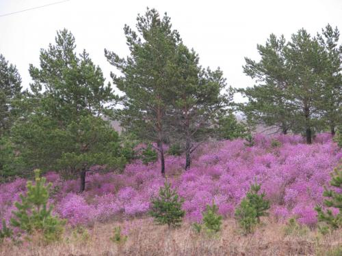
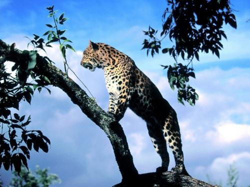
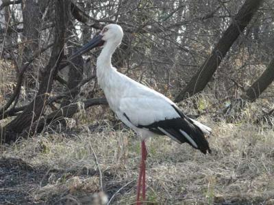
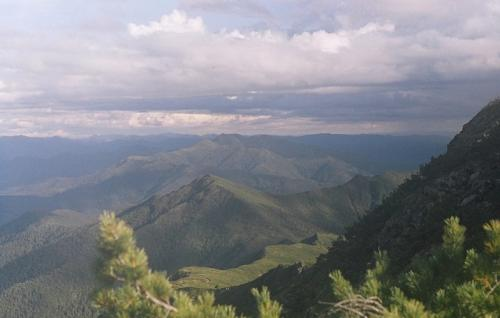

Контрастность ландшафтов Амурской области является особенностью природы этого края. Это бескрайние равнины и скалистые горы, множество рек, озер и обширная болотная местность. Отличительная черта заключается также в смешении растительности и животного мира северной и южной частей области. Климат северной части отличается своей суровостью и холодным температурным режимом. На юге климатическая среда более мягкая, с плодородными почвами и природными особенностями пространства лесостепи. Неповторимая по своим природным богатствам область простирается в умеренном географическом поясе.
Растительный мир Лесные массивы охватывают около 70 % региона. Преобладающим видом в таежной части является лиственница, в некоторых районах растут сосновые деревья, а на востоке господствуют ель и пихта. Среди видов растительности смешанных лесов превалируют дубовые деревья и сосна. В юго-восточной части края встречается кедр - одна из древнейших пород региона и бесспорный долгожитель среди фауны, медонос и одновременно лекарственное дерево - амурский бархат. Лианы, представленные виноградником, лимонником и актинидией, делают амурские леса неповторимыми. В горах – гуща кедрового стланика.
 Растительность лесостепи радует глаз яркими крупными цветами, среди которых великолепные орхидеи, благородные лилии, ирисы, пионы и др.
Растения, характерные для южных пространств, произрастают в речных долинах. Здесь можно встретить тополь и ольху, черемуху и рябину. Из кустарниковых деревьев растут смородина, боярышник, жимолость, малина.
Большие площади в тайге занимает болотистая местность с покрывалом мхов, являющихся питательной средой для ягод (голубики, клюквы), багульника и различных видов осок.
Амурская область изобилует уникальной фауной, среди которой немало реликтов. Присутствуют и растения, питающиеся насекомыми – росянка и пузырчатка.
Животный мир Отличительной чертой фауны края является комбинация животных с разной географией их естественного обитания.
Животные, характерные для северных широт, распространены в лесных массивах, а южные - заселяют лесостепные пространства юга области.
 По всей области в лесах обитают бурые медведи, лоси, изюбры, лисы и белки. На юге области встречается белогрудый медведь (ещё его называют гималайским). В северной части тайги распространен соболь – небольшой хищник, известный своим ценным мехом, здесь же можно натолкнуться на рысь. Красой лесостепи является грациозная косуля, а в гористой местности встречаются горный баран, кабарга, амурский лесной кот и самая крупная кошка планеты – амурский тигр. На берегах водоемов можно встретить ондатру, норку и дальневосточную черепаху.
Область богата и представителями пернатых. Кроме таежных представителей (рябчик, глухарь, тетерев и др.), край богат удивительными видами птиц. Среди них - маньчжурский фазан, дрофа, японский журавль и др.
Территория края отличается большим количеством рек и озер, изобилующими рыбой, в том числе и видами, которые встречаются только в Амурской области (амурский сом, касатка, змееголов).
Климат Весна приходит в начале апреля и длится до конца мая. Для начала весны характерно увеличение количества осадков. Ближе к лету осадков становится меньше, им на смену приходят сильные ветры.
Лето жаркое на юге области и теплое – на севере. С июня и по середину июля стоит теплая солнечная погода, а потом, до начала сентября - влажная, с ливневыми дождями.
Самое короткое время года – осень: с сентября по октябрь, с заморозками и первым снегом уже в конце сентября.
Для зимнего сезона характерна морозная погода, с малым количеством осадков. Погода ясная и безветренная. Зима длинная, с первых чисел октября и до конца марта.